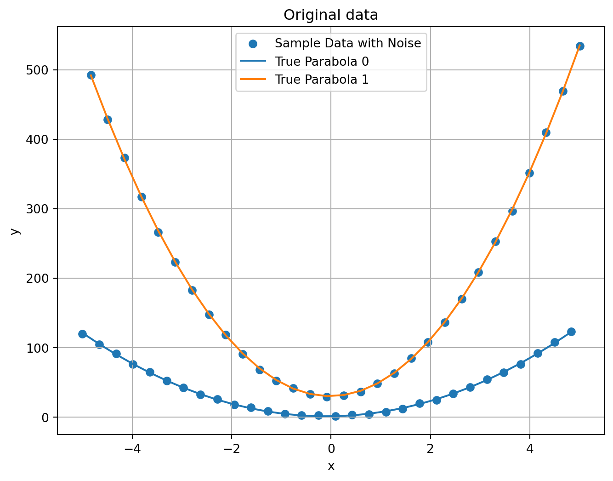

Code
import numpy as np
import matplotlib.pyplot as plt
import random
# data
var = 1 # noise variance
parabolas = [
(5, 1, 1, 0),
(20, 1, 30, 0),
]
# print parabolas coefs, 3 decimal places when printing numbers
for i, (a,b,c,shift) in enumerate(parabolas):
print(f"parabola {i} coefs: a={a}, b={b}, c={c}, shift={shift}")
n_parabola_points = 30
# Generate some sample data points for a quadratic relationship
x = np.linspace(-5, 5, n_parabola_points * len(parabolas))
def parabola(x,a,b,c,shift=0):
return a*(x-shift)**2 + b*(x-shift) + c
y_true = np.ones_like(x)
step_size = len(parabolas)
for i, (a,b,c,shift) in enumerate(parabolas):
y_true[i::step_size] = parabola(x[i::step_size], a, b, c, shift)# True quadratic equation
# Add some random noise to the data to make it realistic
noise = np.random.normal(0, var, y_true.size)
y_data = y_true + noise
plt.figure(figsize=(8, 6))
plt.scatter(x, y_data, label='Sample Data with Noise')
# plot true parabolas
for i, _ in enumerate(parabolas):
plt.plot(x[i::len(parabolas)], y_true[i::len(parabolas)], '-', label=f'True Parabola {i}')
plt.xlabel('x')
plt.ylabel('y')
plt.legend()
plt.title('Original data')
plt.grid(True)
plt.show()parabola 0 coefs: a=5, b=1, c=1, shift=0
parabola 1 coefs: a=20, b=1, c=30, shift=0